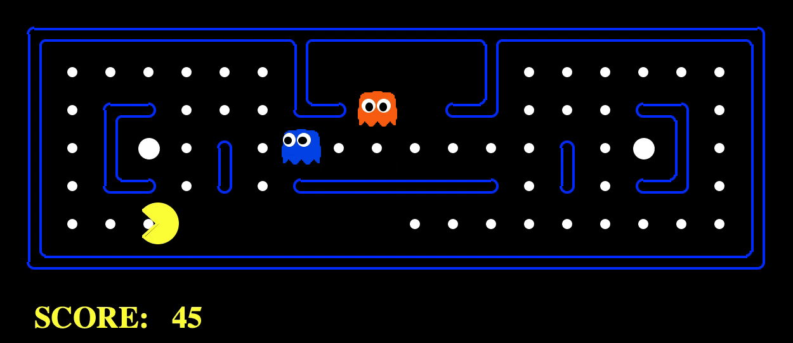
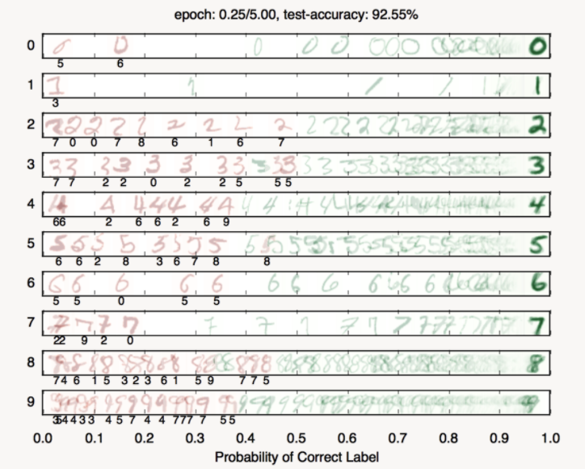

|
I am an undergraduate student at the University of California - Berkeley, where I study mathematics and computer science. For the Fall 2020 semester, I will be a member of the Budapest Semesters in Mathematics program. My interests include statistical learning, probability theory, partial differential equations, and artificial intelligence. I am currently conducting research in Discrete Geometry and Convex Analysis at the Alfréd Rényi Institute of Mathematics under Gergely Ambrus. |
Projects |

|
We implement various search algorithms(DFS, BFS, Dijkstra, A*, Greedy) to help Pacman traverse mazes and complete various challenges. |
|  |
We design agents for classic Pacman(including the ghosts), and implement minimax(w/ alpha-beta pruning) and expectimax search with custom evaluation functions. |

|
We implement Value Iteration and Q-Learning(including featured-based learning) to find optimal policies for Markov Decision Processes(MDPs). Modeling the classic Pacman game as a MDP allows us to apply learning-based strategies. |

|
We design Pacman agents that use sensors to locate and eat invisible ghosts, with Exact Inference, Approximate Inference w/ Sampling, and Particle Filter methods. |
|  |
We build neural networks to classify digits, identify languages, and approximate non-linear functions. |